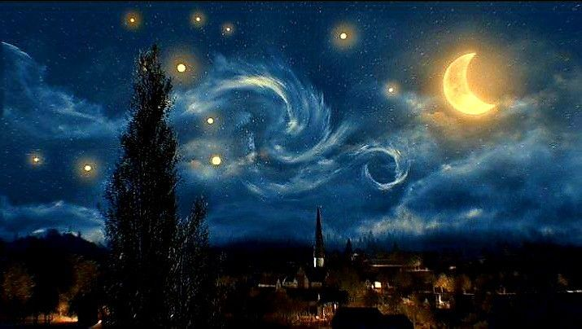

The Starry Night
Vincent van Gogh
Painted in June 1889
The Starry Night (Dutch: De sterrennacht) is an oil-on-canvas painting by the Dutch Post-Impressionist painter Vincent van Gogh. Painted in June 1889, it depicts the view from the east-facing window of his asylum room at Saint-Rémy-de-Provence, just before sunrise, with the addition of an imaginary village.It has been in the permanent collection of the Museum of Modern Art in New York City since 1941, acquired through the Lillie P. Bliss Bequest. Widely regarded as Van Gogh's magnum opus, The Starry Night is one of the most recognizable paintings in Western art